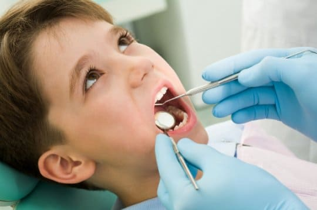
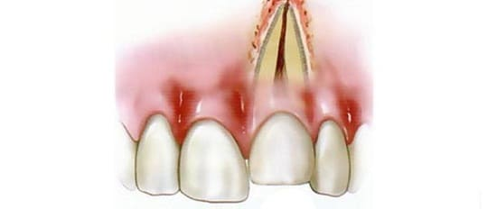
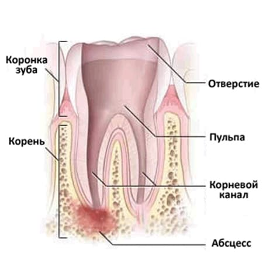
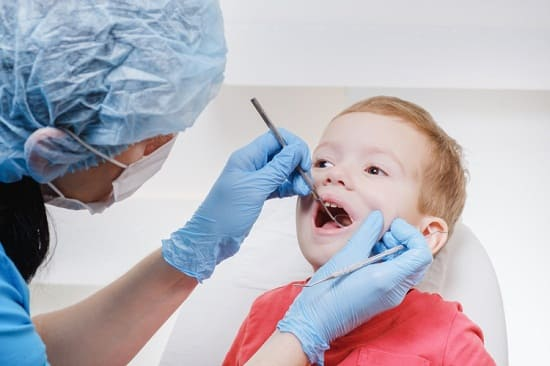

Детские зубы подвержены всевозможным заболеваниям и чрезвычайным ситуациям. Тем не менее при возникновении неотложной ситуации после окончания рабочего дня стоматолог часто недоступен. Вот наше руководство по некоторым проблемам с зубами, которые могут случиться с вашим ребенком, и что вы при этом можете сделать.
ТРАВМА ЗУБОВ - ПЕРЕЛОМ, СКОЛ ИЛИ РАСШАТЫВАНИЕ
Как бы ни были осторожны родители, малыши и дошкольники все равно падают, и иногда их зубы первыми вступают в контакт с землей (или другой твердой поверхностью). Не всегда понятно, что делать в такой ситуации, если стоматология уже закрыта. Некоторые детские стоматологи оказывают неотложную помощь, и вы можете найти их телефон в справочнике или узнать у знакомых или соседей. Только не отправляйтесь автоматически в отделение неотложной помощи. Сначала позвоните и узнайте, оказывают ли они стоматологическую помощь и могут ли вызвать стоматолога. Большинство небольших отделений этого не делают.
Зуб расшатан или смещен. Не сильно расшатанные зубы часто хорошо заживают без всякого вмешательства. Главная опасность — если смещение слишком сильное или зуб слишком глубоко вдвинут в десну, то мог повредиться корень и зуб в итоге омертвеет. Это не слишком важно, если зуб молочный. А вот замена постоянных зубов может быть слишком дорогой.
Решение, что делать с зубом, должно приниматься индивидуально для каждого случая. Если постоянный зуб сильно расшатан, далеко сдвинут с места или в глубину десны, возможно, стоит попробовать вернуть его на место, чтобы увеличить шансы для восстановления корня. Чем скорее это сделать, тем лучше, даже если рабочий день уже окончен. Если зуб лишь слегка шатается, лишь немного смещен или чуть вдавлен в десну, это может подождать до утра, когда будет работать стоматолог.
Зуб выбит. Как правило, когда полностью выбит молочный зуб, не стоит наносить дополнительную травму, пытаясь его реимплантировать. Однако иногда это необходимо для правильного роста будущих постоянных зубов. Детям 4 лет и старше, у которых постоянные зубы, — дело ближайшей пары лет, реимплантация молочного зуба, скорее всего, не нужна. Младшим детям это может оказаться необходимым. Полезно держать зуб в стакане с молоком, пока вы доберетесь до стоматолога.
Перелом или скол зуба. Первое правило при сколе или переломе зуба — найти недостающую часть! Это облегчит работу стоматолога и улучшит косметический результат. Если отломана почти половина зуба, может пострадать живая середина зуба (пульпа); чем скорее вернут отломок на место, тем лучше. Его можно держать в молоке. Если отломан только небольшой уголок или краешек зуба, это может подождать до следующего дня.

Важно не спутать абсцесс с простым стоматитом. Он может походить на абсцесс в плане чувствительности при надавливании и боли. Но осмотрев пространство между щекой и десной, вы четко увидите язву, и вам не придется напрасно тратиться на поездку к врачу. |
РВАНЫЕ РАНЫ РТА ИЗ-ЗА ТРАВМЫ ЗУБОВ
При травмах лица и зубов очень часто образуются обширные порезы и глубокие раны на внутренней поверхности рта. Если зубы не повреждены и единственная проблема — внутренняя рана, то не стоит волноваться. Это не требует наложения швов или неотложной помощи. Мы не зашиваем раны во рту. Другое дело, если рана сквозная. Наружную часть, возможно, надо зашить, если она зияет. При таком сквозном ранении могут потребоваться антибиотики для профилактики инфицирования.
ЗУБНЫЕ АБСЦЕССЫ
У детей может развиться инфекционный процесс глубоко в тканях десны вокруг корня зуба. Это начнется с умеренной зубной боли, которая за 1—2 дня быстро превратится в довольно сильную. На десне вы заметите красную болезненную припухлость, очень чувствительную при прикосновении. Соседний зуб также будет чувствителен. Ибупрофен поможет снять боль. Утром обратитесь к стоматологу. Лучше, чтобы абсцесс осмотрел стоматолог. Если он недоступен, обратитесь к своему семейному врачу. Вероятно, он пропишет антибиотик, который начнет лечить инфекцию, пока вы не посетите стоматолога.

КАРИОЗНЫЕ ПОЛОСТИ
Независимо от того, насколько хорошо вы чистите зубы ребенка, кариозные полости все же могут образоваться. Мы не будем отнимать время, чтобы рассказать обо всех способах их обнаружения и лечения. Мы сталкивались с очень широким диапазоном мнений стоматологов относительно того, как агрессивно (или неагрессивно) очищать полости, как обезболивать и какой материал использовать для пломб. Мы не думаем, что есть правильные и неправильные методы в детской стоматологии. Но мы советуем вам получить более чем одно мнение, если какой-либо стоматолог предлагает метод, который кажется вам слишком агрессивным. Вот некоторые наши рассуждения.
Надо ли лечить полость? Некоторые полагают, что каждая полость должна быть сразу же запломбирована, а другие выбирают выжидательный подход, наблюдая за небольшими полостями и пломбируя те, которые со Временем ухудшаются. Для своих детей мы выбирали менее агрессивный подход. Если в молочном зубе, который все равно через несколько лет выпадет, выявляется незначительная, не слишком глубокая полость, ее можно просто наблюдать, заручившись согласием стоматолога. С другой стороны, некоторые полости, особенно в коренных зубах, могут оставаться не замеченными, пока не произойдет существенный распад. Возможно, тут не стоит тянуть с лечением.
Использовать сильные седативные, общую анестезию или попытаться обойтись без этого? Это зависит от ребенка, количества и расположения полостей. У одного из наших малышей была не очень глубокая полость в переднем зубе. Стоматолог предложил нам общую анестезию у себя в офисе, чтобы максимально облегчить процедуру. Нам это не очень понравилось. Мы получили второе мнение и решили не ждать, а запломбировать ее, пока это не слишком трудно, попытавшись обойтись без наркоза. После некоторых нервозности и суеты мы наконец согласились на небольшую дозу закиси азота (веселящий газ), что и было сделано. Процедура прошла легко, и ребенок все время сидел на коленях у моей жены. У другого нашего ребенка при лечении полости был использован оральный седативный препарат, и все тоже прошло хорошо.
Мы предпочитаем лечить минимальные полости, по возможности, не прибегая ни к какой седации. Однако мы прекрасно понимаем, что дети с многочисленными полостями, особенно в задней части рта, скорее всего, нуждаются в некотором дополнительном успокоении. Вы не должны приступать к подобным процедурам, если вас не устраивает стоматолог и вы не получили второго мнения.

Здоровье ребенка от докторов Сирс / Сирс У. и др.